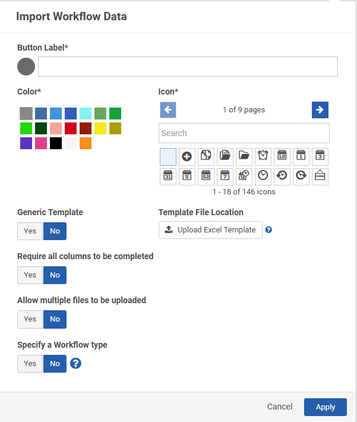
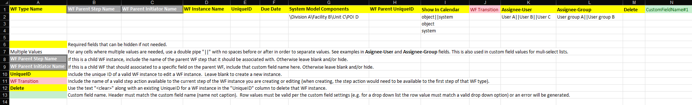

You can import bulk workflow data from a spreadsheet (.xls, .xlsx, or .xlsm format).
When a bulk import button is configured in the Portal, users can import bulk workflow data.
To import data:
To configure a bulk import button:

The spreadsheet from which you upload your workflow data must include specific fields. In general, the workflow import template should include the fields described in the following table.
For any cells where multiple values are needed, use a double pipe "||" with no spaces before or after in order to separate values. This is also used in custom field values for multi-select lists.
| Field Name | Description |
|---|---|
WF Type Name | Workflow type. |
| WF Parent Step Name | If this is a child workflow instance, include the name of the parent workflow step that it should be associated with. Otherwise leave blank and/or hide. |
| WF Parent Initiator Name | If this is a child workflow that should associated to a specific field on the parent workflow, include that custom field name here. Otherwise leave blank and/or hide. |
WF Instance Name | Workflow instance name. |
| UniqueID | Include the UniqueID of a valid workflow instance to edit a workflow instance. Leave this field blank to create a new instance. |
| Due Date | Workflow due date. |
| System Model Components | \Division A\Facility B\Unit C\POI D |
| WF Parent UniqueID | Unique ID of workflow parent. |
| Show In Calendar | object||system object system |
| WF Transition | Include the name of a valid step action available to the current step of the workflow instance you are creating or editing (when creating, the step action would need to be available to the first step of that workflow type). |
| Assignee-User | User(s) assigned to workflow. |
| Assignee-Group | Group(s) assigned to workflow. |
| Delete | Use the text "<clear>" along with an existing UniqueID for a workflow instance in the "UniqueID" column to delete that workflow instance. |
| CustomFieldName | Custom field name. The header must match the custom field name (name not caption). Row values must be valid per the custom field settings (e.g. for a drop-down list, the row value must match a valid drop-down option) or an error will be generated. |
We recommend using the Workflow Import Template, shown in the image below, and populating it with your workflow data.
Remove the examples and description information in the template before adding your workflow data to the spreadsheet. Otherwise, an error will occur for those lines.
